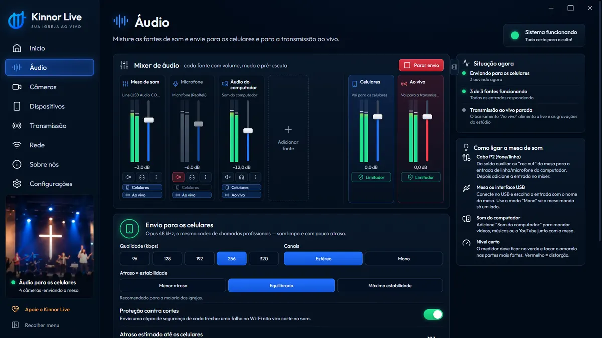
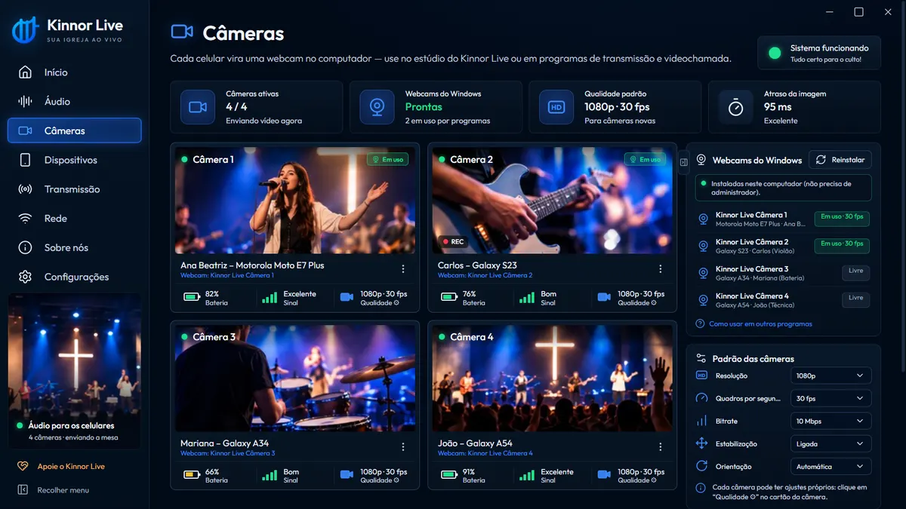
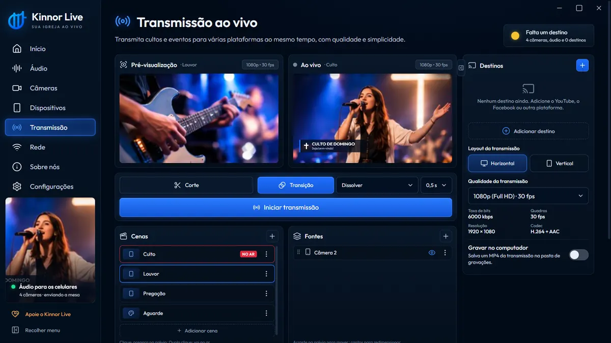
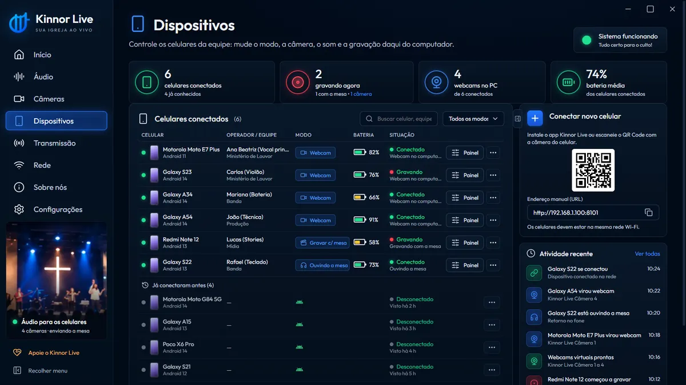
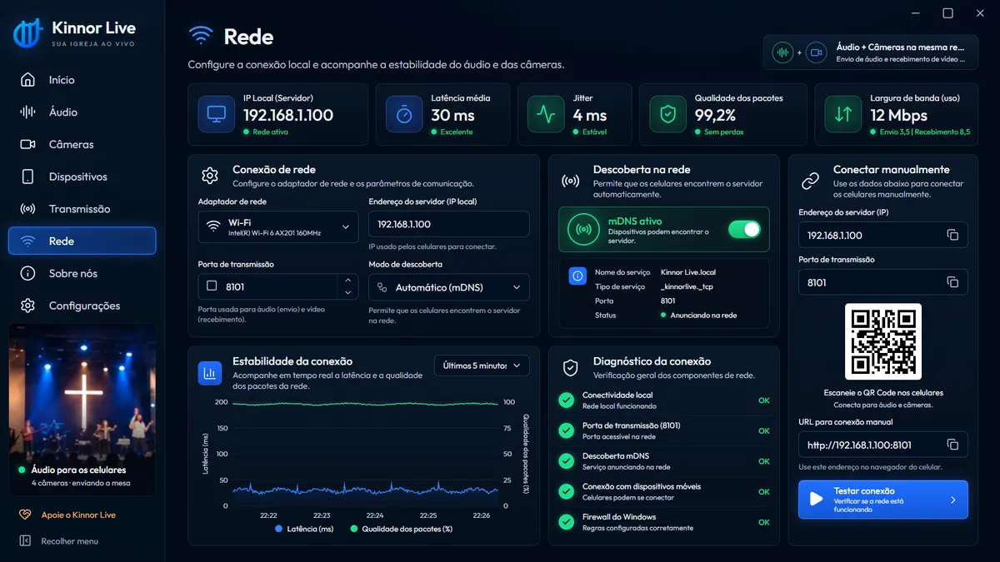

Microfone do celular
como quase todo story é gravado hoje
- Distorce com o volume das caixas de som
- Eco do templo e ruído de quem está perto
- A voz da pregação se perde no meio do som
GRATUITO · FEITO DENTRO DA IGREJA
Transmita o culto com várias câmeras sem fio, grave stories com o som limpo da mesa e entre ao vivo no YouTube, Facebook e Instagram ao mesmo tempo. Tudo de graça, com o que a equipe já tem no bolso.

UMA CENTRAL PARA TODO O MINISTÉRIO DE MÍDIA
Câmeras, som, redes sociais e transmissão costumam exigir equipamentos caros e vários programas. O Kinnor Live junta tudo e usa o que a sua equipe já tem: um computador e os celulares.
Cada celular vira uma câmera sem fio no computador, em até Full HD. Monte uma transmissão com vários ângulos sem comprar nenhuma câmera.
Câmera para igreja grátisVídeos gravados no celular com o áudio que sai da mesa: limpo, equilibrado, sem estourar. Prontos para o Instagram e o WhatsApp.
Stories com som de verdadeCenas, prévia e transições em um estúdio simples. Transmita para várias plataformas e contas ao mesmo tempo, na horizontal ou na vertical.
Transmissão do culto ao vivoMúsicos, vocais e voluntários ouvem a mesa pelo próprio celular com um fone de ouvido, pelo Wi-Fi da igreja.
Retorno de áudio no celularO DIFERENCIAL DOS STORIES DA SUA IGREJA
Quem já gravou o louvor pelo celular conhece o resultado: o microfone fica perto das caixas, o som distorce, pega o eco do templo e a conversa de quem está do lado. No Kinnor Live o celular filma e o áudio chega direto da mesa, pelo Wi-Fi, do jeito que o técnico de som mixou.
como quase todo story é gravado hoje
o celular filma, a mesa entrega o áudio
No app, escolha Gravar com a mesa.
Grave o louvor, um trecho da pregação ou um aviso.
Toque em Instagram ou WhatsApp e poste na hora.
VÁRIAS EQUIPES, AO MESMO TEMPO
Enquanto a transmissão acontece, cada celular conectado pode fazer uma coisa diferente — e o computador acompanha todos em um só painel.
Até quatro celulares como câmeras do culto, com zoom, lente e qualidade ajustados de longe.
Quem cuida do Instagram grava stories e cortes com o som da mesa e posta na mesma hora.
Músicos e vocais ouvem a mesa no fone, pelo próprio celular, sem cabo até o palco.
O técnico junta mesa, microfones e computador e decide o que vai para os celulares e para a live.
Um painel mostra cada celular com função, bateria e sinal, e troca o papel de qualquer um com um clique.
COMECE COM O QUE VOCÊ TEM
Um computador com Windows, os celulares da equipe e o Wi-Fi da igreja. Só isso.
Baixe grátis, instale no Windows e ligue a mesa pelo cabo P2 ou por USB.
Cada voluntário instala o app, entra no Wi-Fi da igreja e aponta a câmera para o QR Code da tela.
Câmera da transmissão, stories com o som da mesa ou retorno no fone.
Monte as cenas, escolha as redes e comece. O culto também fica gravado no computador.
O som e as câmeras circulam na rede local da igreja. A internet só é usada para a transmissão.
CONHEÇA O PROGRAMA
01 / ÁUDIO
Junte a mesa, os microfones e o som do computador — vídeos, músicas, vinhetas. Cada fonte tem volume, mudo, pré-escuta e medidor, e você decide o que vai para os celulares e o que vai para a transmissão.

02 / CÂMERAS
No modo Webcam, cada celular aparece no Windows como “Kinnor Live Câmera 1” a “Câmera 4”. Use no estúdio do próprio Kinnor ou em qualquer programa de transmissão e de videochamada.

03 / TRANSMISSÃO
Prepare cenas para o louvor, a pregação e o intervalo, confira na pré-visualização e coloque no ar com corte ou transição. Transmita na horizontal para o YouTube e na vertical para o Instagram e o TikTok.

04 / EQUIPE
Veja bateria, sinal e função de cada aparelho. Troque o modo, ajuste a câmera ou comece a gravar à distância — sem interromper quem está filmando.

05 / CONEXÃO
O celular lê o QR Code na tela do computador e se conecta sozinho. O programa também encontra os celulares na rede e oferece o app Android pelo mesmo QR Code.

O APP DA EQUIPE
Abre direto na câmera, com poucos botões, para o voluntário se concentrar no culto. É só deslizar para trocar de modo.
Em qualquer modo, o celular também toca o som da mesa no fone, como retorno.
Vídeo no celular com o som limpo da mesa.
POR DENTRO DO KINNOR LIVE
Tudo o que importa para o culto, em uma visão.
COMECE A USAR
Instale no computador da mídia e chame a equipe. Em poucos minutos os celulares já estão conectados.
Gratuito · Versão 1.2.0 · 178 MB
Windows 10 ou 11 (64 bits)
Baixar para WindowsCâmera, stories com o som da mesa, webcam sem fio e retorno no fone.
Chegando às lojas. No Android você já pode instalar o app direto.

“Feito dentro da igreja
para servir a outras igrejas.”
NOSSA HISTÓRIA
O Kinnor Live começou na equipe de mídia da Assembleia de Deus · Ministério Jardim Palmares (ADMJP). Pierre Saloia queria transmitir os cultos com qualidade, mas as ferramentas eram caras, complicadas ou exigiam equipamentos que a igreja não tinha.
Então ele construiu a própria plataforma: os celulares da equipe como câmeras, o som da mesa nos fones e nas gravações, e a transmissão ao vivo em várias redes. O que começou para servir uma igreja agora é oferecido a todas, com o mesmo propósito: expandir o Reino de Jesus Cristo e levar a mensagem do Evangelho mais longe.
Kinnor (כִּנּוֹר) é a palavra hebraica para a harpa, o instrumento que Davi tocava para adorar a Deus (1 Samuel 16:23). Queremos que a tecnologia também seja instrumento de adoração.
GRATUITO DE VERDADE
O Kinnor Live é gratuito para qualquer igreja, sem planos e sem prazo para acabar. O projeto se mantém como os grandes projetos livres e comunitários: com ofertas voluntárias de irmãos e igrejas que são abençoados por ele.
“Mais bem-aventurada coisa é dar do que receber.” Atos 20:35
Pix ou cartão, com qualquer valor, em página segura do Mercado Pago.
O QR Code não inclui valor; digite o valor escolhido no seu banco.
Sim. O programa para Windows e o app são gratuitos, sem mensalidade, sem anúncios e sem marca d'água na transmissão. O projeto é mantido por ofertas voluntárias.
Só para transmitir ao vivo. O som da mesa nos celulares, as câmeras sem fio e a gravação de stories funcionam na rede Wi-Fi da igreja, mesmo sem internet.
Sim. Ligue a saída da mesa (rec out, fone ou auxiliar) na entrada de áudio do computador com um cabo P2, ou conecte uma mesa ou interface USB. Depois é só escolher essa entrada no mixer do Kinnor Live.
Até quatro celulares podem ser câmeras (webcams) do computador ao mesmo tempo. Outros celulares da equipe podem receber o som da mesa para retorno ou para gravar stories.
Sim. No modo Gravar com a mesa, o celular filma e o áudio vem direto da mesa de som pelo Wi-Fi, sem passar pelo microfone do aparelho. O som fica limpo, sem eco e sem a distorção das caixas.
Sim. O Kinnor Live transmite para YouTube, Facebook, Instagram, TikTok, X, Twitch, Kick ou RTMP próprio, com várias contas ao mesmo tempo, na horizontal ou na vertical.
Não. Sua transmissão não recebe marca d'água nem logo do Kinnor Live.
O programa roda no Windows 10 e 11 (64 bits). O app funciona no Android 10 ou superior e está chegando à Google Play e à App Store.
Sim. Se aparecer “O Windows protegeu o computador”, clique em “Mais informações” e depois em “Executar assim mesmo”. Veja o passo a passo na página de download.
Os vídeos gravados no celular ficam na galeria do aparelho. As gravações do computador ficam na pasta Documentos\KinnorLive. Nada é enviado para servidores do Kinnor Live.
SUA IGREJA AO VIVO
Baixe o Kinnor Live e comece com a equipe e os celulares que vocês já têm.